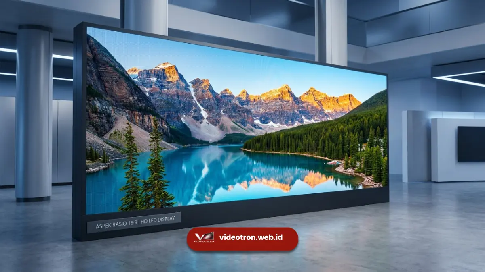

Cara menghitung ukuran videotron yang tepat adalah dengan menentukan aspek rasio yang diinginkan, lalu menyesuaikan jumlah kabinet modul secara proporsional agar tampilan gambar tidak terdistorsi saat konten ditayangkan.
Poin Penting Menghitung Ukuran Videotron:
- Ukuran videotron ditentukan dari jumlah kabinet modul yang disusun, bukan ukuran bebas
- Aspek rasio umum yang digunakan adalah 16:9 dan 4:3
- Ukuran videotron yang tidak proporsional terhadap aspek rasio dapat menyebabkan gambar gepeng atau terpotong
- Jumlah kabinet dihitung dari lebar dan tinggi area yang tersedia dibagi ukuran satu kabinet modul
- Pixel pitch turut memengaruhi resolusi akhir dari ukuran videotron yang dipilih
Kenapa Ukuran Videotron Tidak Bisa Ditentukan secara Bebas?
Videotron tersusun dari beberapa kabinet modul dengan ukuran fisik tetap, umumnya dalam satuan yang sudah distandarkan oleh pabrikan, misalnya 500 mm x 500 mm atau 960 mm x 960 mm.
Karena itu, ukuran akhir videotron merupakan hasil perkalian dari jumlah kabinet yang disusun secara horizontal dan vertikal, bukan ukuran bebas yang bisa ditentukan sembarangan seperti pada layar proyektor.
Jika ukuran yang diinginkan tidak sesuai kelipatan ukuran kabinet modul, videotron dapat menyisakan area kosong di tepi layar atau mengharuskan penyesuaian tambahan yang memengaruhi tampilan akhir.
Oleh karena itu, memahami cara menghitung ukuran videotron sejak awal akan membantu proses perencanaan menjadi lebih efisien.
Tentukan Aspek Rasio yang Dibutuhkan
Aspek rasio adalah perbandingan lebar dan tinggi layar, dan menjadi acuan utama sebelum menentukan ukuran videotron. Dua aspek rasio yang paling umum digunakan adalah:
- 16:9, cocok untuk menampilkan konten video modern, presentasi, dan iklan digital karena sesuai dengan format tayangan pada umumnya.
- 4:3, lebih jarang digunakan saat ini namun masih relevan untuk kebutuhan tertentu seperti menampilkan konten dengan format lama atau kebutuhan ruang yang lebih persegi.
Menentukan aspek rasio di awal akan membantu memastikan konten yang ditayangkan tidak terlihat gepeng, memanjang, atau terpotong saat videotron sudah terpasang.

Penerapan aspek rasio standar 16:9 untuk memastikan visual tampil sempurna tanpa distorsi.Hitung Jumlah Kabinet Modul yang Dibutuhkan
Setelah aspek rasio ditentukan, langkah berikutnya adalah menghitung jumlah kabinet modul berdasarkan area yang tersedia. Secara umum, rumus yang digunakan adalah:
Rumus Perhitungan Jumlah Kabinet Modul
Jumlah Kabinet Horizontal = Lebar Area yang Tersedia / Lebar Satu Kabinet Modul
Jumlah Kabinet Vertikal = Tinggi Area yang Tersedia / Tinggi Satu Kabinet Modul
Sebagai contoh, jika satu kabinet modul berukuran 500 mm x 500 mm dan area yang tersedia berukuran 4 meter x 3 meter, maka dibutuhkan 8 kabinet secara horizontal dan 6 kabinet secara vertikal, sehingga total videotron tersusun dari 48 kabinet modul.
Hasil perhitungan ini sebaiknya dibulatkan ke bawah atau disesuaikan dengan kelipatan penuh kabinet modul, agar tidak ada bagian kabinet yang terpotong dan menyebabkan tampilan visual tidak simetris.
Kenapa Ukuran yang Tidak Tepat Bisa Menyebabkan Distorsi Visual?
Distorsi visual pada videotron umumnya terjadi ketika ukuran layar yang dipasang tidak proporsional dengan aspek rasio konten yang ditayangkan.
Misalnya, konten dengan format 16:9 yang ditampilkan pada videotron berbentuk persegi cenderung menghasilkan gambar yang gepeng atau memanjang karena software pemutar konten memaksa menyesuaikan rasio secara otomatis.
Selain itu, jika jumlah kabinet modul tidak dihitung dengan tepat, videotron berpotensi memiliki area kosong di bagian tepi yang mengganggu tampilan keseluruhan, terutama untuk kebutuhan yang membutuhkan tampilan penuh tanpa celah, seperti backdrop panggung atau videotron fasad gedung.
Peran Pixel Pitch dalam Menentukan Resolusi Akhir
Selain ukuran fisik, pixel pitch juga memengaruhi resolusi akhir dari videotron yang dipasang. Semakin kecil pixel pitch yang digunakan pada ukuran videotron yang sama, semakin tinggi resolusi yang dihasilkan karena jumlah titik LED per meter persegi menjadi lebih banyak.
Karena itu, menghitung ukuran videotron sebaiknya dilakukan bersamaan dengan menentukan pixel pitch yang sesuai kebutuhan jarak pandang, agar hasil akhir videotron memiliki ukuran fisik yang pas sekaligus resolusi visual yang optimal.
Menghitung ukuran videotron yang tepat dimulai dari menentukan aspek rasio yang dibutuhkan, dilanjutkan dengan menghitung jumlah kabinet modul berdasarkan area yang tersedia, lalu memastikan hasilnya sesuai kelipatan penuh kabinet agar tidak terjadi distorsi visual.
Pertimbangkan juga pixel pitch secara bersamaan agar resolusi akhir videotron sesuai dengan kebutuhan jarak pandang di lokasi pemasangan.
Butuh bantuan menghitung ukuran videotron yang sesuai kebutuhan dan anggaran Anda? Hubungi tim kami sekarang untuk konsultasi dan penawaran gratis.
Simak juga panduan cara memilih pixel pitch dan perbedaan videotron indoor vs outdoor agar perencanaan videotron Anda semakin matang.
Tim Redaksi Vendor Videotron
LED Technology Consultant dan Visual Educator
Konsultan dan spesialis solusi display digital berdedikasi tinggi yang fokus membagikan panduan edukatif mengenai penerapan teknologi layar LED videotron untuk kebutuhan interior dan eksterior modern di Indonesia.